Gallery
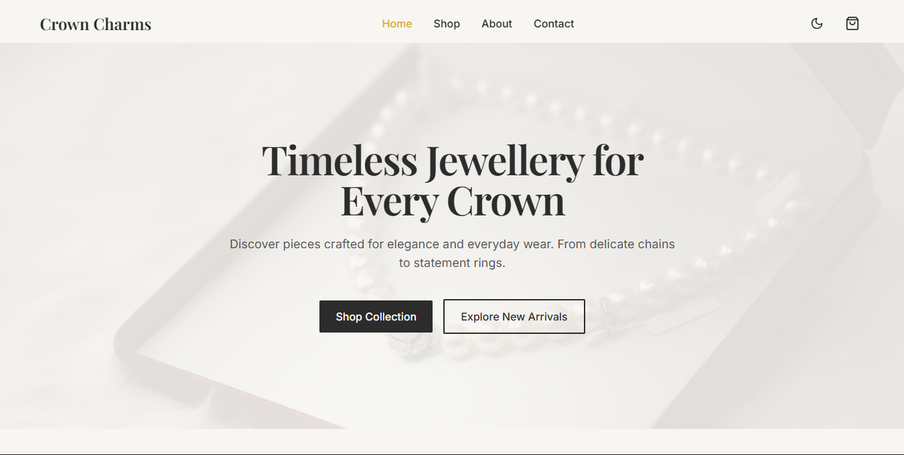
Overview
Crown Charms is a jewellery e-commerce concept created around a simple idea: jewellery should feel as elegant online as it does in person.
The Client's Challenge
Customers cannot physically touch or try the product before purchasing. The website needed to create confidence through visual presentation and user experience.
What I Solved
I treated the site as a digital jewellery showroom: clean product presentation, elegant typography, minimal navigation, and clear CTAs to maintain a premium atmosphere.
Design Direction
The visual identity uses a minimalist aesthetic with generous whitespace and refined typographic choices. The homepage introduces the brand with a clear message and direct paths to shop and explore.
Gallery
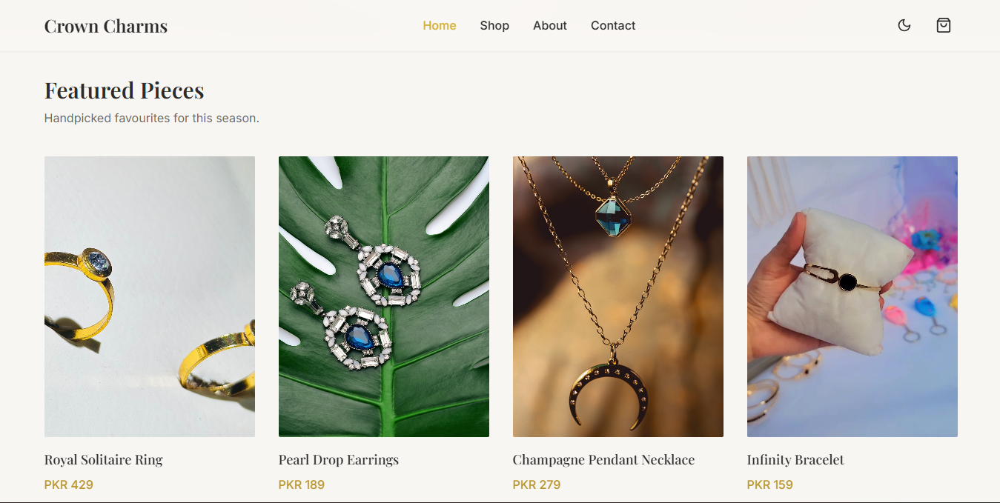
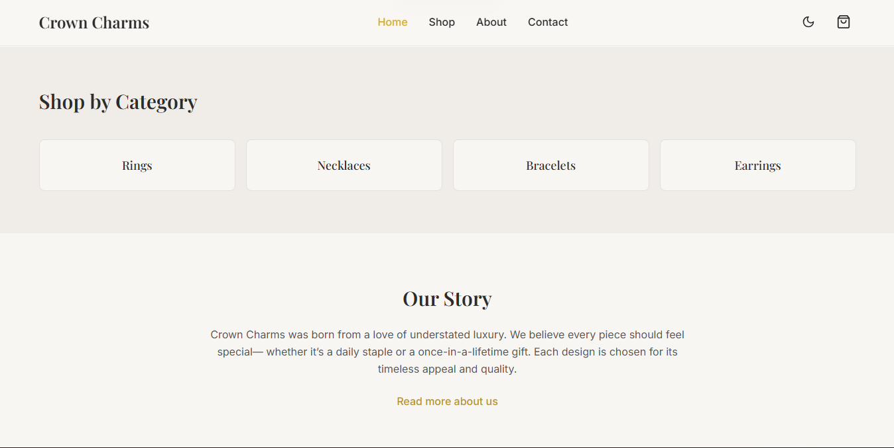
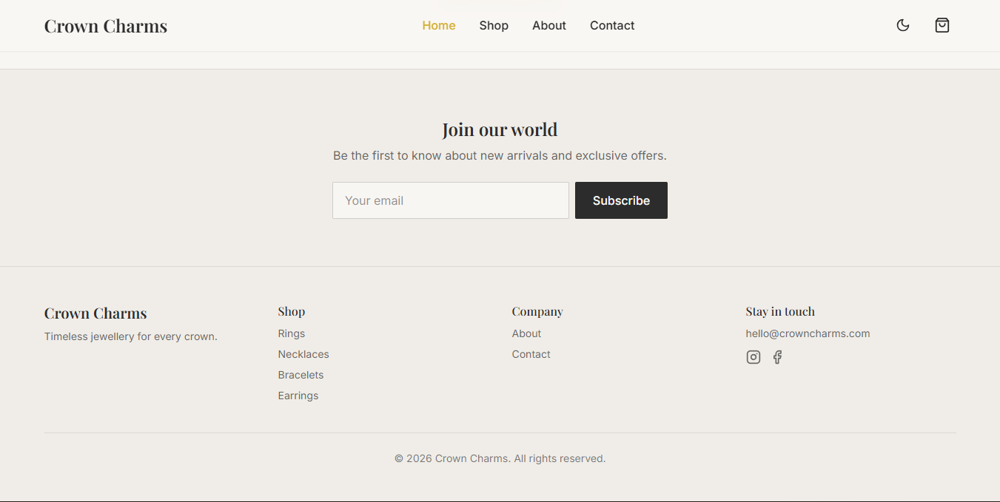
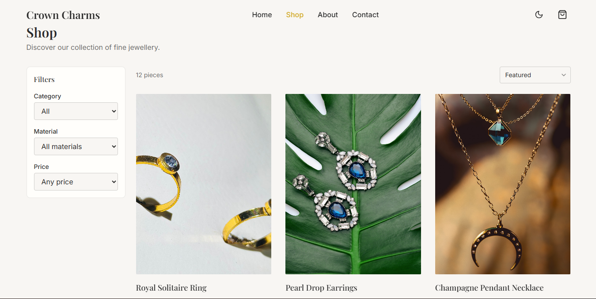
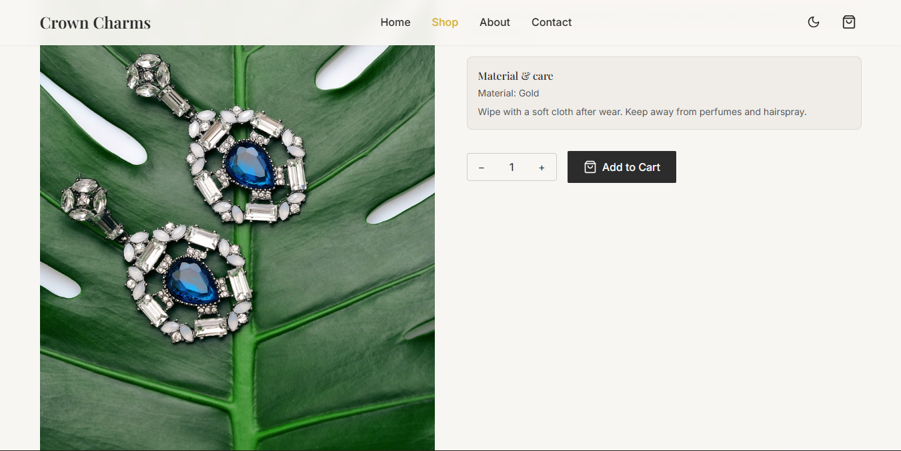
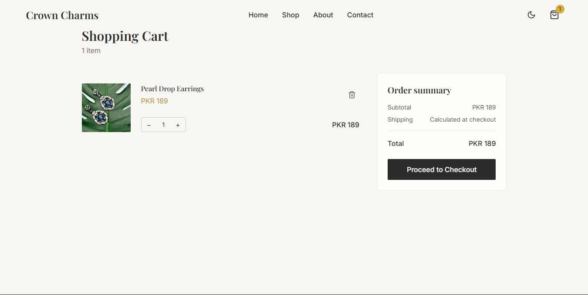
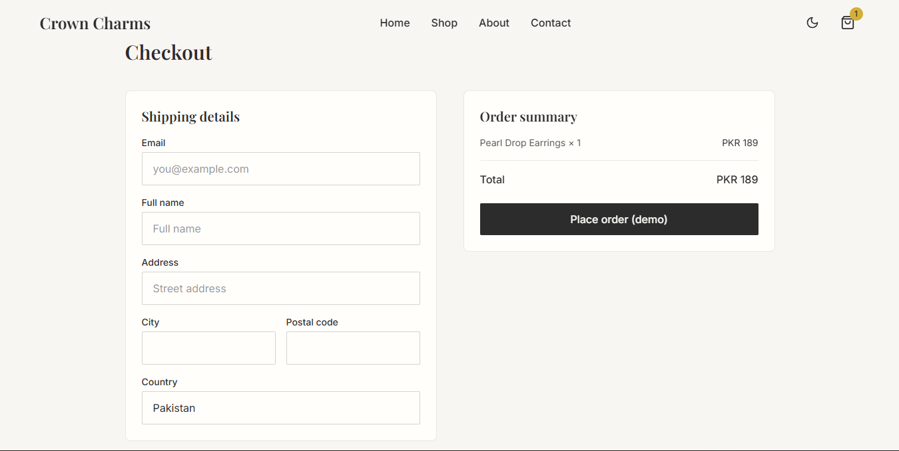
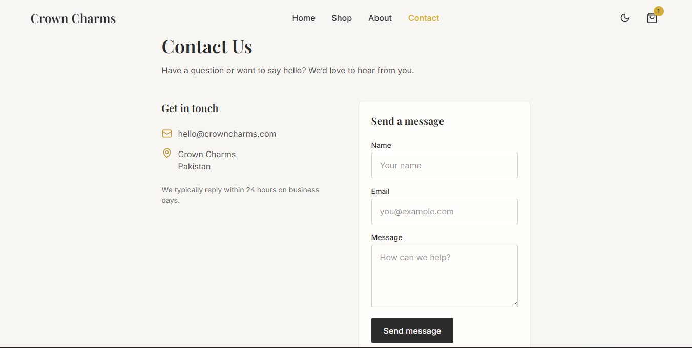
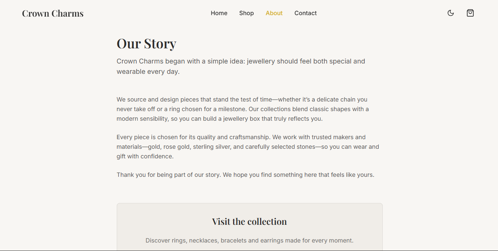
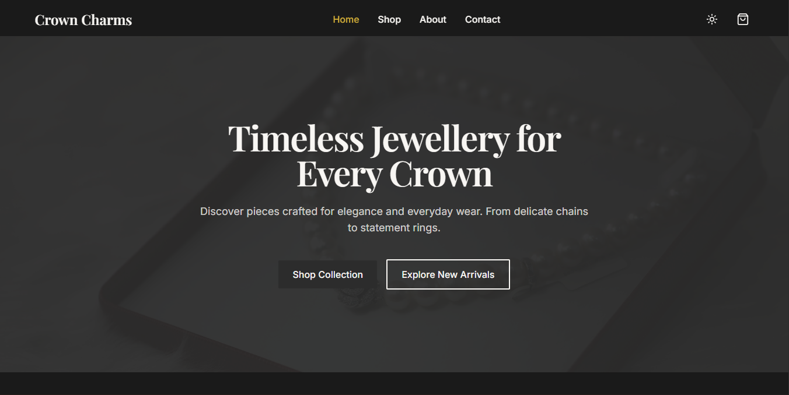